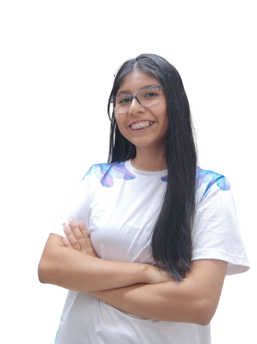
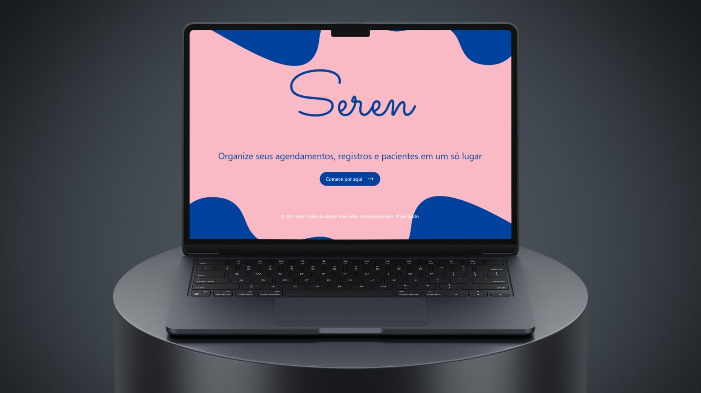
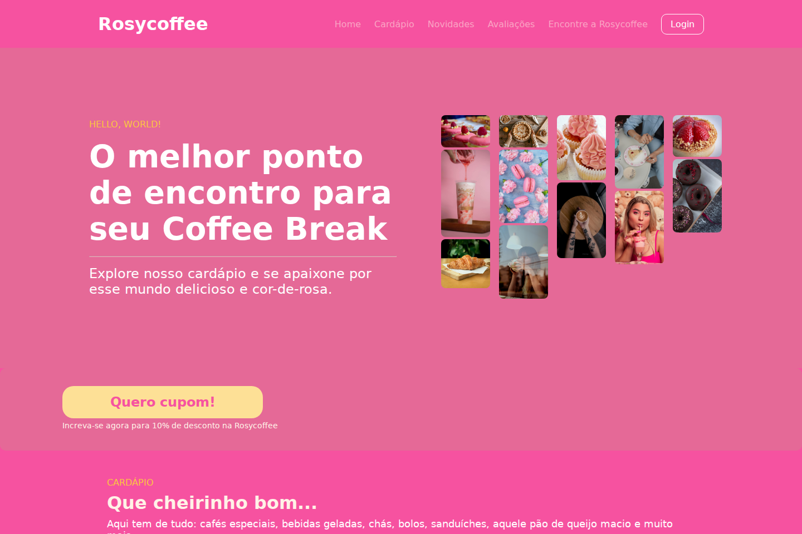
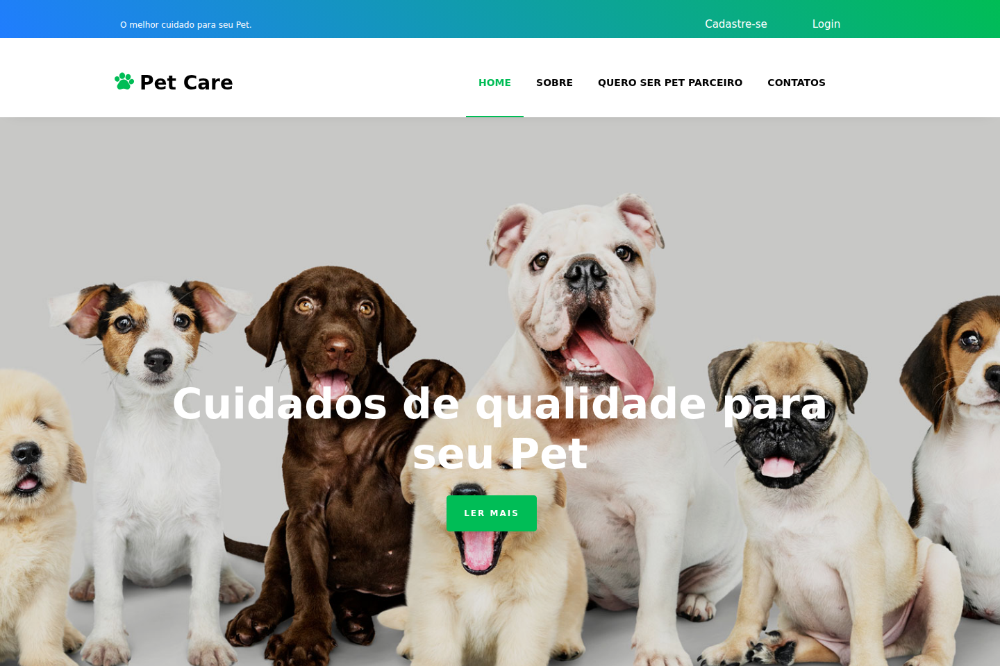

1º semestre · 2024Protótipo concluído
Super Válido
Ofertas de alimentos próximos ao vencimento para aproximar supermercados e consumidores.
Minha atuação: Planejamento técnico & organização
Ver projetoDados · Software · Criatividade
São Paulo, Brasil
Engenharia de dados & desenvolvimento
Anahi Narieli
Guarachi Mamani
Estudante de Desenvolvimento de Software Multiplataforma e estagiária em Engenharia de Dados na IBM. Exploro como aplicações, bancos de dados e pipelines se conectam.
01 / Sobre mim
Gosto de entender o caminho completo: da aplicação que gera um dado ao processo que transforma esse dado em informação útil.
Minha formação combina desenvolvimento de software, bancos de dados e projetos em equipe. Hoje, meu foco está em engenharia de dados, cloud e pipelines, com interesse também em backend e arquitetura de sistemas.
Nos projetos em equipe, também assumo a organização do trabalho: facilito reuniões, acompanho o backlog e ajudo a transformar requisitos em entregas por sprint. Desde o Peregrine, atuo como Scrum Master nos projetos acadêmicos.
Modelagem de dados, backend e organização do trabalho com Scrum: backlog, sprints, documentação e acompanhamento das entregas.
Desenho, livros, videogames e RPG de mesa também fazem parte do meu repertório.
02 / Projetos acadêmicos
Do primeiro protótipo à aplicação multiplataforma: seis semestres construindo soluções em equipe.
Ofertas de alimentos próximos ao vencimento para aproximar supermercados e consumidores.
Minha atuação: Planejamento técnico & organização
Ver projeto
Planejamento de viagens para mulheres que querem viajar com outras mulheres.
Minha atuação: Backend, banco de dados & Scrum
Ver projeto
Agendamentos, pacientes e pagamentos reunidos para apoiar a rotina de psicólogos.
Minha atuação: Backend, banco de dados & Scrum
Ver projeto
Artigos, eventos e imagens para conhecer o patrimônio cultural imaterial brasileiro.
Minha atuação: API, integrações & Scrum
Ver projeto
Educação financeira para o público infantojuvenil, com lições e recursos de gamificação.
Minha atuação: Frontend Flutter & Scrum
Ver projetoGestão de floricultura em uma aplicação multiplataforma, atualmente em desenvolvimento.
Minha atuação: Banco de dados, backend & Scrum
Ver projetoProjetos adicionais, fora da sequência dos seis semestres.
Ingestão incremental e transformação de dados em uma arquitetura Medallion.
Ver projetoComunicação entre estudantes, professores e a instituição de ensino.
Ver projeto
Interface do projetoUma landing page que apresenta o cardápio e a atmosfera de uma cafeteria.
Ver projeto
Interface do projetoUma proposta para aproximar tutores de animais e cuidadores.
Ver projeto03 / Trajetória
A formação técnica, os projetos em grupo e a experiência profissional se encontram aqui.
2024 / 1º semestre → 2026
Tecnologia em Desenvolvimento de Software Multiplataforma
Início em fevereiro de 2024. Previsão de conclusão em dezembro de 2026.
Julho de 2022 → Novembro de 2023
Técnico em Desenvolvimento de Sistemas
Formação técnica em desenvolvimento de sistemas.
Novembro de 2025 → Atual
Estagiária em Engenharia de Dados
Atuação em Engenharia de Dados, com foco em dados, cloud e pipelines.
Março de 2023 → Julho de 2023
Estagiária de TI
Instalação e manutenção de computadores, redes Wi-Fi e equipamentos. Suporte a alunos e professores, apoio em aulas de Mecatrônica com Tinkercad e suporte técnico a eventos escolares.
04 / Ferramentas & tecnologias
Tecnologias presentes na minha formação, no meu perfil profissional e nos projetos.
01 /
Python, PySpark, SQL, PostgreSQL, SQL Server e BigQuery.
02 /
HTML, CSS, JavaScript, Node.js, Ruby e Ruby on Rails.
03 /
Kotlin Multiplatform, Flutter, Dart e Android Studio.
04 /
Google Cloud, Docker, Git, GitHub, Jira e Figma.
05 / Aprendizado contínuo
Os títulos estão registrados no meu perfil profissional. As instituições, cargas horárias e datas não constam no currículo exportado e aguardam complementação.
06 / Conexões
Diferentes linguagens, novas formas de entender o mundo.